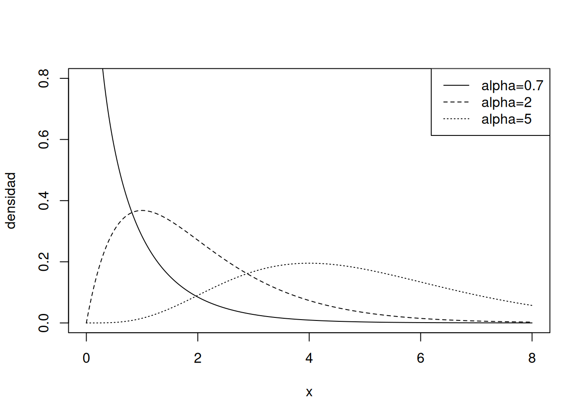

pgamma(2, shape = 4, rate = 3)[1] 0.8487961Al finalizar este capítulo, el estudiante será capaz de:
Las distribuciones estudiadas en este capítulo amplían considerablemente el repertorio de modelos continuos.
A diferencia de la exponencial, estas familias permiten una gran variedad de formas.
Utilizaremos la parametrización
\[ X\sim\operatorname{Gamma}(\alpha,\lambda), \]
donde \(\alpha>0\) es el parámetro de forma y \(\lambda>0\) es la tasa.
Su densidad es
\[ \boxed{ f_X(x)=\frac{\lambda^\alpha}{\Gamma(\alpha)}x^{\alpha-1}e^{-\lambda x},\qquad x>0. } \]
Aquí
\[ \Gamma(\alpha)=\int_0^\infty t^{\alpha-1}e^{-t}\,dt \]
es la función Gamma.
Para esta parametrización,
\[ \boxed{E[X]=\frac{\alpha}{\lambda}} \]
y
\[ \boxed{\operatorname{Var}(X)=\frac{\alpha}{\lambda^2}}. \]
La desviación estándar es
\[ \sigma=\frac{\sqrt{\alpha}}{\lambda}. \]
Si
\[ \alpha=1, \]
entonces
\[ \Gamma(1)=1 \]
y la densidad Gamma se reduce a
\[ f_X(x)=\lambda e^{-\lambda x}, \]
por lo que
\[ \boxed{\operatorname{Gamma}(1,\lambda)=\operatorname{Exp}(\lambda)}. \]
La exponencial es, por tanto, un caso particular de la Gamma.
Si los eventos de un proceso ocurren con tasa \(\lambda\) y los tiempos entre eventos son exponenciales independientes, el tiempo total hasta el evento número \(r\) tiene una distribución Gamma con forma \(r\) y tasa \(\lambda\).
Cuando \(r\) es entero positivo, esta distribución también se conoce como Erlang.
Supongamos que llegan en promedio 3 solicitudes por minuto. Si \(T\) es el tiempo hasta la cuarta solicitud,
\[ T\sim\operatorname{Gamma}(4,3). \]
La media es
\[ E[T]=\frac43\text{ minutos}. \]
La probabilidad de que la cuarta solicitud ocurra antes de 2 minutos se obtiene con
pgamma(2, shape = 4, rate = 3)[1] 0.8487961rate y scale en RR permite parametrizar Gamma de dos formas equivalentes:
\[ \text{scale}=\theta=\frac1\lambda. \]
Por tanto,
dgamma(2, shape = 4, rate = 3)[1] 0.2677052dgamma(2, shape = 4, scale = 1/3)[1] 0.2677052producen el mismo resultado.
No debemos utilizar simultáneamente rate y scale sin comprender esta relación.
dgamma(2, shape = 4, rate = 3)[1] 0.2677052pgamma(2, shape = 4, rate = 3)[1] 0.8487961qgamma(0.95, shape = 4, rate = 3)[1] 2.584552rgamma(5, shape = 4, rate = 3)[1] 2.6951786 0.4708420 2.2644650 0.7167810 0.4223825Para valores pequeños de \(\alpha\), la distribución puede ser fuertemente asimétrica hacia la derecha. Al aumentar \(\alpha\), la densidad se vuelve más concentrada y visualmente más simétrica.
x <- seq(0, 8, length.out = 500)
plot(x, dgamma(x, 0.7, rate = 1), type = "l",
ylim = c(0, 0.8), xlab = "x", ylab = "densidad")
lines(x, dgamma(x, 2, rate = 1), lty = 2)
lines(x, dgamma(x, 5, rate = 1), lty = 3)
legend("topright", legend = c("alpha=0.7", "alpha=2", "alpha=5"),
lty = 1:3)
La distribución Weibull es especialmente útil en confiabilidad.
Escribiremos
\[ X\sim\operatorname{Weibull}(k,\eta), \]
donde
Su densidad es
\[ \boxed{ f_X(x)=\frac{k}{\eta}\left(\frac{x}{\eta}\right)^{k-1} \exp\left[-\left(\frac{x}{\eta}\right)^k\right],\qquad x\ge0. } \]
La función de distribución es
\[ \boxed{F_X(x)=1-\exp\left[-\left(\frac{x}{\eta}\right)^k\right]}. \]
La función de supervivencia es
\[ \boxed{S(x)=P(X>x)=\exp\left[-\left(\frac{x}{\eta}\right)^k\right]}. \]
La tasa instantánea de falla es
\[ \boxed{h(x)=\frac{k}{\eta}\left(\frac{x}{\eta}\right)^{k-1}}. \]
Esta fórmula explica gran parte de la utilidad de Weibull:
Así, \(k\) ayuda a distinguir fallas tempranas, fallas aleatorias y desgaste.
Si
\[ k=1, \]
entonces
\[ f_X(x)=\frac1\eta e^{-x/\eta}. \]
Por tanto, Weibull con \(k=1\) es exponencial con tasa
\[ \lambda=\frac1\eta. \]
La media es
\[ \boxed{E[X]=\eta\Gamma\left(1+\frac1k\right)} \]
y la varianza
\[ \boxed{ \operatorname{Var}(X)=\eta^2\left[ \Gamma\left(1+\frac{2}{k}\right) -\Gamma^2\left(1+\frac1k\right) \right]. } \]
El tiempo de vida de un componente se modela como
\[ X\sim\operatorname{Weibull}(2,1000), \]
en horas.
La probabilidad de que sobreviva más de 1200 horas es
\[ P(X>1200)=\exp[-(1.2)^2]. \]
En R:
pweibull(1200, shape = 2, scale = 1000,
lower.tail = FALSE)[1] 0.2369278Como \(k=2>1\), el modelo representa una tasa de falla creciente, coherente con un mecanismo de desgaste.
dweibull(800, shape = 2, scale = 1000)[1] 0.0008436679pweibull(800, shape = 2, scale = 1000)[1] 0.4727076qweibull(0.90, shape = 2, scale = 1000)[1] 1517.427rweibull(5, shape = 2, scale = 1000)[1] 1180.6759 525.4997 890.9558 632.0144 998.2420La distribución Beta se define en el intervalo
\[ 0<x<1. \]
Si
\[ X\sim\operatorname{Beta}(\alpha,\beta), \]
con \(\alpha>0\) y \(\beta>0\), su densidad es
\[ \boxed{ f_X(x)=\frac{1}{B(\alpha,\beta)} x^{\alpha-1}(1-x)^{\beta-1},\qquad 0<x<1, } \]
donde
\[ B(\alpha,\beta)= \frac{\Gamma(\alpha)\Gamma(\beta)}{\Gamma(\alpha+\beta)}. \]
Para
\[ X\sim\operatorname{Beta}(\alpha,\beta), \]
\[ \boxed{E[X]=\frac{\alpha}{\alpha+\beta}} \]
y
\[ \boxed{ \operatorname{Var}(X)= \frac{\alpha\beta} {(\alpha+\beta)^2(\alpha+\beta+1)}. } \]
La familia Beta es muy flexible:
Supongamos que la proporción diaria de capacidad utilizada de un sistema se modela mediante
\[ X\sim\operatorname{Beta}(5,2). \]
La media es
\[ E[X]=\frac57\approx0.7143. \]
La probabilidad de utilizar más del 80% de la capacidad es
pbeta(0.80, shape1 = 5, shape2 = 2,
lower.tail = FALSE)[1] 0.34464Para
\[ \alpha=\beta=1, \]
la densidad Beta es
\[ f_X(x)=1,\qquad0<x<1, \]
por lo que
\[ \boxed{\operatorname{Beta}(1,1)=U(0,1)}. \]
dbeta(0.7, shape1 = 5, shape2 = 2)[1] 2.1609pbeta(0.7, shape1 = 5, shape2 = 2)[1] 0.420175qbeta(0.95, shape1 = 5, shape2 = 2)[1] 0.9371501rbeta(5, shape1 = 5, shape2 = 2)[1] 0.7060695 0.6030771 0.7319683 0.7380758 0.7468985set.seed(2026)
xg <- rgamma(50000, shape = 4, rate = 3)
mean(xg)[1] 1.336002var(xg)[1] 0.4405249c(media_teorica = 4/3,
varianza_teorica = 4/9) media_teorica varianza_teorica
1.3333333 0.4444444 set.seed(2026)
k <- 2
eta <- 1000
xw <- rweibull(50000, shape = k, scale = eta)
media_w <- eta * gamma(1 + 1/k)
var_w <- eta^2 * (gamma(1 + 2/k) - gamma(1 + 1/k)^2)
c(media_empirica = mean(xw), media_teorica = media_w)media_empirica media_teorica
883.7981 886.2269 c(var_empirica = var(xw), var_teorica = var_w)var_empirica var_teorica
214478.8 214601.8 set.seed(2026)
a <- 5
b <- 2
xb <- rbeta(50000, a, b)
c(media_empirica = mean(xb),
media_teorica = a/(a+b))media_empirica media_teorica
0.7145248 0.7142857 | Distribución | Soporte | Parámetros | Uso típico |
|---|---|---|---|
| Gamma | \((0,\infty)\) | forma \(\alpha\), tasa \(\lambda\) | tiempos acumulados, cantidades positivas |
| Weibull | \([0,\infty)\) | forma \(k\), escala \(\eta\) | vida útil y confiabilidad |
| Beta | \((0,1)\) | \(\alpha,\beta\) | proporciones y fracciones |
El interactivo permite elegir Gamma, Weibull o Beta y modificar sus parámetros mediante deslizadores.
Para cada distribución se muestran:
En Weibull se muestra además el comportamiento cualitativo de la tasa de falla: decreciente, constante o creciente según el valor de \(k\).
Construye una familia Weibull para distintos valores de \(k\) manteniendo fija la escala \(\eta\). Representa simultáneamente la densidad y la función
\[ h(x)=\frac{k}{\eta}\left(\frac{x}{\eta}\right)^{k-1}. \]
Compara \(k=0.6\), \(k=1\) y \(k=2\).
Después construye varias densidades Beta en \([0,1]\) y observa cómo cambia la forma para:
\[ (\alpha,\beta)=(1,1),(2,5),(5,2),(0.5,0.5),(5,5). \]
La decisión debe fundamentarse también en conocimiento del proceso, no sólo en ajuste gráfico.
rate y scale en la distribución Gamma.shape1 y shape2 de R.Gamma:
\[ f(x)=\frac{\lambda^\alpha}{\Gamma(\alpha)}x^{\alpha-1}e^{-\lambda x}. \]
Weibull:
\[ f(x)=\frac{k}{\eta}\left(\frac{x}{\eta}\right)^{k-1} e^{-(x/\eta)^k}. \]
Beta:
\[ f(x)=\frac{x^{\alpha-1}(1-x)^{\beta-1}}{B(\alpha,\beta)}. \]
Casos particulares importantes:
\[ \operatorname{Gamma}(1,\lambda)=\operatorname{Exp}(\lambda), \]
\[ \operatorname{Weibull}(1,\eta)=\operatorname{Exp}(1/\eta), \]
\[ \operatorname{Beta}(1,1)=U(0,1). \]
| Material | Formato | Acceso | Propósito |
|---|---|---|---|
| Cuaderno de Google Colab | Notebook interactivo (R) | Abrir en Colab | Ejecutar ejemplos y simulaciones de Gamma, Weibull y Beta. |
| Cuaderno de R | R Markdown | Abrir cuaderno R | Reproducir probabilidades, cuantiles, confiabilidad y simulaciones. |
| Interactivo | HTML / GeoGebra | Abrir recurso | Explorar parámetros, densidades, áreas y tasa de falla Weibull. |
| Presentación | PDF / PPT | Próximamente | Se incorporará cuando se proporcionen los enlaces. |
| Video | Video | Próximamente | Explicación audiovisual complementaria. |
| Infografía | Imagen / PDF | Próximamente | Síntesis visual de las tres familias. |
El tratamiento de las distribuciones Gamma, Weibull y Beta sigue la presentación estándar de Walpole et al. (2012), Devore (2016), Montgomery y Runger (2018) y Johnson (2018). Los ejemplos, ejercicios, simulaciones y código en R son originales; el enfoque computacional general toma como referencia Kerns (2010).